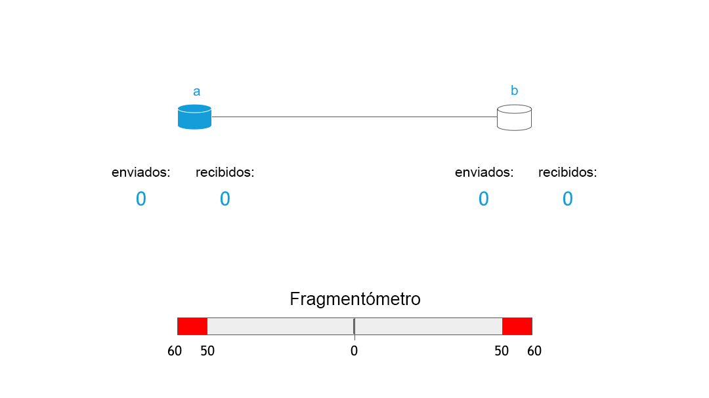

Almacenamiento RIF: Los primeros fragmentos
Por Vojtěch Šimetka & Rinke Hendriksen1 de julio de 2019
Hace unas semanas, publicamos nuestro primer artículo sobre almacenamiento descentralizado en el que resaltamos nuestra visión y nuestra motivación para construirlo. Desde entonces han sucedido muchas cosas. Entre otras, hemos decidido el alcance del producto viable mínimo (MVP), hemos atendido cuestiones cruciales y formado una sociedad con el equipo de Ethereum Swarm para contribuir a materializar la visión. Esta sociedad es muy importante: nos permitirá aprender de las experiencias de uno de los proyectos mejor reputados sobre almacenamiento descentralizado, mientras ejecutamos simultáneamente sobre Swarm y Almacenamiento RIF.
En esta publicación pondremos de relieve cómo surgió esta sociedad, y en consecuencia, les ofreceremos un panorama en lenguaje de programación de alto nivel sobre cómo funciona Almacenamiento RIF.
El comienzo de una colaboración
Tal como han leído en nuestra publicación anterior, el almacenamiento descentralizado es de gran importancia para que una sociedad más justa sea posible. Dado que este es un componente tan importante, no sorprende que haya múltiples proyectos tratando de lograrlo. Para nombrar algunos: IPFS, Storj, Sia, MaidSafe y Swarm. Si bien todos estos proyectos tienen diferencias importantes, el común denominador es que todos tratan de cambiar la manera en que se almacena y accede a la información en todo el mundo. Está claro que RIF cuenta en este caso con la ventaja de quien mueve segundo: nos encontrábamos en una posición en la que podíamos aprender sobre todos estos proyectos interesantes y sus puntos a favor y en contra. Y así lo hicimos.
A partir de este análisis, Swarm, para nosotros, era el proyecto más prometedor. Tiene un diseño ingenioso, una visión fuerte y en todos los proyectos había un camino claro hacia la implementación de almacenamiento descentralizado incentivado (ahondaré sobre este punto más adelante).
Por esa misma época, Swarm estaba organizando la Cumbre Swarm 2019 en Madrid. Enviamos a nuestros representantes Vojtech Simetka y Ale Banzas como asistentes a la cumbre. Aquí, nuestra conclusión se confirmó y nos quedó mucho más claro el estado del proyecto; mientras que Swarm está bien pensado y definido a nivel teórico, aparte del almacenamiento central, algunas de las funcionalidades están aún en etapa experimental o de investigación, como, por ejemplo, el mecanismo de incentivos. El almacenamiento descentralizado incentivado depende en gran medida de una solución de pago de segunda capa, dado que los micropagos son cruciales para incentivar a los nodos a que se comporten de una manera beneficiosa para la red. Como nuestro equipo cuenta con una vasta experiencia en soluciones de pago de segunda capa (RIF Payments y Lumino), vimos la oportunidad de colaborar con el equipo de Swarm y hacer realidad la visión del almacenamiento incentivado.
Fue así como nació la sociedad y el registro de incentivos Este registro, bajo la dirección de Fabio Barone de Swarm y coordinado por Vojtech Simetka de RIF Storage, apuntará a concretar una implementación mínima (ver: el alcance del MVP) para el almacenamiento de datos incentivado, apoyándose mucho en las investigaciones realizadas por el equipo de Swarm. Además, el objetivo es ser compatible tanto con las monedas nativas de EVM (por ejemplo, RBTC y ETH) como con tokens ERC20 (por ejemplo, RIF) en los próximos 3 meses.
Conceptos básicos sobre Almacenamiento RIF y Swarm
En esta parte, nos gustaría explicar de manera general cómo funciona el almacenamiento descentralizado (en este caso, Swarm) y qué papel juega la incentivación. Para una descripción completa, consulte la documentación oficial de Swarm.
Las dos acciones principales que los usuarios esperan del almacenamiento descentralizado es cargar y descargar sus archivos. Comencemos por explicar cómo funciona la carga de archivos. Identificamos los siguientes tres pasos:
- Cargar el archivo a un nodo.
- Preparar el archivo (fragmentación y encriptación).
- Distribuir los fragmentos por la red.
El primer paso es muy directo: el usuario se conecta a un nodo de Swarm en funcionamiento y carga
el archivo, por ejemplo, con el comando swarm up

Estos fragmentos se asignan a un árbol de Merkle que proporciona integridad. La siguiente imagen muestra qué aspecto podría tener un árbol de estas características:

En este árbol, las hojas están ocupadas por el hash de cada fragmento, mientras que la raíz del árbol representa el hash de todo el archivo. Estos hashes se utilizan de dos maneras: como sumas de comprobación para garantizar la integridad de los fragmentos, y para indicar su ubicación en la red. Los fragmentos se distribuyen según la distancia XOR entre las direcciones de los nodos y el hash de su contenido. Esquemáticamente, luce así:

El proceso de descarga de un archivo sigue en gran medida el mismo algoritmo, pero en orden inverso. El usuario solicita a la red un archivo mediante el hash de raíz del árbol de Merkle, que luego se traduce en solicitudes de fragmentos (los nodos-hojas del árbol de Merkle) de nodos individuales. Por último, se desencriptan los fragmentos y se ensambla el archivo.
Sobre la incentivación
Tal como dijimos antes, la incentivación es de gran importancia para una red como la que se describe más arriba. ¿Por qué? Piense por un segundo si le gustaría que su computadora portátil esté conectada 24 horas al día fraccionando fragmentos, almacenándolos y sirviéndolos desde su disco rígido. ¿No? Bueno, probablemente no sea el único. Háganse la siguiente pregunta: ¿qué haría que esté dispuesto a servir fragmentos y contribuir a la salud de la red?
Swarm define el Protocolo Contable de Swarm (SWAP), que es un sistema “ojo por ojo” en el que los nodos dan cuenta de cuántos datos solicitan y sirven. Básicamente, esto significa que si alguien me pide un millón de fragmentos, le serviré a cambio un millón de fragmentos. No obstante, ese sistema tiene un problema en redes de almacenamiento de archivos. Prevemos variabilidad en el uso de la red (yo podría transmitir un video durante 2 horas y dejar mi PC sin usar durante las 4 horas siguientes) y diferencias en las capacidades de los nodos (un teléfono no puede servir muchos fragmentos, mientras que un servidor, sí). SWAP permite que los nodos contabilicen sus saldos y, si un nodo le solicita muchos fragmentos a usted, usted le emitirá una solicitud de pago por medio de una solución de pago de segunda capa.

Aquí se muestra el mecanismo SWAP, en el que los nodos se intercambian fragmentos mutuamente y el saldo se liquida cuando el “fragmentómetro” se inclina demasiado hacia un lado.
Aunque simple en su diseño, este concepto es muy potente para redes descentralizadas. Tal como lo ilustran el crecimiento de Bitcoin y de las criptomonedas, los incentivos, cuando están bien estructurados, pueden animar a los nodos a que se comporten de cierta manera deseable para la salud de la red. En este caso, esperamos que, incentivados por las ganancias, se sumen nodos a la red que sirvan los fragmentos más deseados de servidores de alto rendimiento, lo cual hará que la red sea más robusta, rápida y difícil de atacar. ¡Y eso es exactamente lo que queremos! Además, un sistema de estas características también permitiría que cualquiera ingrese sin costo en el ecosistema RSK/Ethereum.
Los próximos pasos
Como pueden ver, estamos trabajando para proporcionarles una tecnología muy interesante. Pueden seguir nuestro progreso en el tablero de incentivos. Si usted es desarrollador, una manera en que puede ayudarnos es escoger uno de los problemas de GitHub, con algunas de las investigaciones, como las relativas a franqueos (postage) o, mejor aún, póngase en contacto con nosotros y veamos cómo podemos trabajar juntos. Hasta la próxima vez, cuando les mostraremos un adelanto de la interfaz de usuario de Almacenamiento RIF.